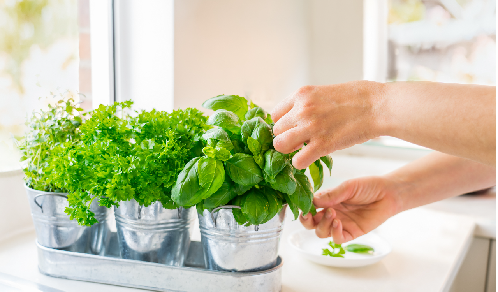

Your message has been sent. Thank you!
Your message has been sent.
Thank you!
Starting Your Home Herb Garden

Tired of pricey, wilting store-bought herbs? Start your home herb garden! Enjoy fresh, cost-saving herbs and brighten your home with greenery. Here's a simple guide to start your herb adventure.
Why Start a Herb Garden?
Home herb gardens offer fresh herbs for cooking and health benefits. Snip basil for Italian dishes or mint for homemade tea. Herbs like basil, mint, and thyme are rich in vitamins and antioxidants, boosting your well-being.
Cost-Effective Flavor Boost:
Homegrown herbs enhance dishes without the expense of store-bought ones. Enjoy fresh, flavorful herbs anytime, saving money and reducing waste.
Starting Your Home Herb Garden
Tired of pricey, wilting store-bought herbs? Start your home herb garden! Enjoy fresh, cost-saving herbs and brighten your home with greenery. Here's a simple guide to start your herb adventure.
Why Start a Herb Garden?
Home herb gardens offer fresh herbs for cooking and health benefits. Snip basil for Italian dishes or mint for homemade tea. Herbs like basil, mint, and thyme are rich in vitamins and antioxidants, boosting your well-being.
Cost-Effective Flavor Boost:
Homegrown herbs enhance dishes without the expense of store-bought ones. Enjoy fresh, flavorful herbs anytime, saving money and reducing waste.
Eco-Friendly Choice:
Home herb gardens reduce carbon footprints by avoiding store-bought herbs' long transports. Embrace sustainability and enjoy fresh, organic produce.
Fresh, Organic Ingredients:
Grow herbs free from pesticides or chemicals, ensuring pure flavors. Enjoy high-quality ingredients, promoting chemical-free cooking.
Aesthetic Charm and Calm:
Herb gardens add visual appeal to indoor spaces, creating a serene atmosphere. Gardening promotes mindfulness, reducing stress and anxiety.
Simple Steps to Start:
1)Choose Your Herbs: Select basil, mint, or thyme for versatility and taste.
2)Pick the Right Spot: Place herbs where they'll get 6-8 hours of sunlight daily.
3)Plan Your Layout: Space herbs for growth and arrange them for visual appeal.
4)Prepare the Soil: Use nutrient-rich soil for healthy plant growth.
5)Plant and Care: Follow planting guidelines and water regularly.
6)Harvest and Prune: Trim herbs for fuller growth and flavorful leaves.
7)Monitor Pests: Check for pests and diseases regularly to maintain plant health.
8)Grow Your Healing Garden:Discover herbs' healing properties like basil's anti-inflammatory effects or mint's soothing qualities. Nurturing your garden promotes emotional well-being, making it more than just a source of flavor.
Start your herb garden today and enjoy fresh, flavorful herbs while enhancing your well-being!